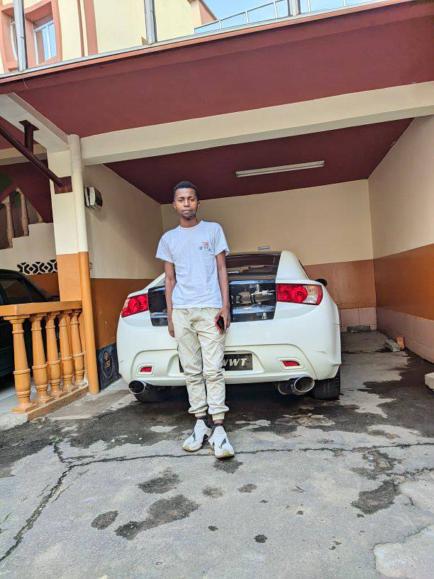
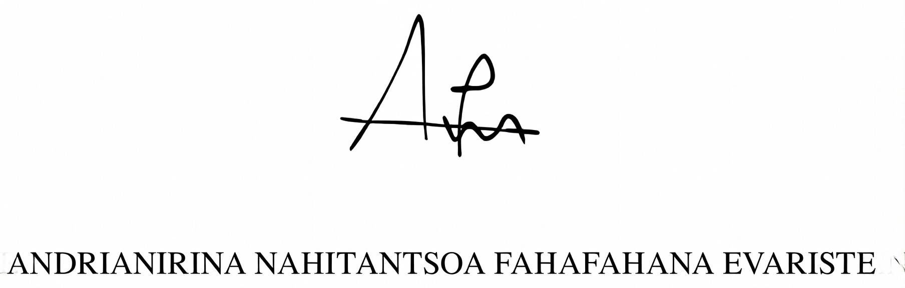

Spécialiste en Informatique, Réseaux & Systèmes
avec expertise en Cybersécurité et Hydraulique Intelligente
Titulaire d'une Licence en Informatique, passionné par les technologies de l'information et motivé par le développement continu de mes compétences. Organisé, rigoureux et déterminé, curieux et adaptable, prêt à relever de nouveaux défis et à m'intégrer efficacement dans un environnement professionnel dynamique. Fort d'expériences en administration de réseaux, cybersécurité et gestion hydraulique, je vise à contribuer à des projets innovants alliant IT et solutions durables.
E-media • Antananarivo
Focus sur développement logiciel, réseaux et systèmes
JISCA • Antananarivo
Amélioration compétences communicationnelles
Orange Digital Center • Antananarivo
Techniques avancées de protection et veille sécuritaire
Fihary/Soft • Fianarantsoa
Dépannage hardware/software et optimisation
PCMM CDII • Fianarantsoa
Méthodologies pour conception et gestion projets
ISST • Fianarantsoa
Gestion infrastructures eau et assainissement
Lycée Raherivelolo Ramamonjy • Fianarantsoa
Ministère de l'Intérieur et Décentralisation • Antananarivo (6 mois)
Maintenance parc informatique, administration réseaux/systèmes, diagnostic/résolution incidents, support utilisateurs internes pour efficacité opérationnelle.
GRANDLION • Fianarantsoa (3 mois)
Programme EAURIZON : Enquêtes/collecte données assainissement, visites suivi infrastructures adduction eau, accompagnement technique communal pour restitution STEFI, évaluation bassins versants et mesure débits sources.
